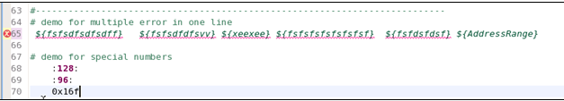
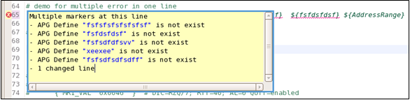
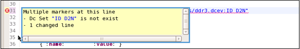

Error annotations in the MTP editor
The MTP editor automatically checks your MTL setup files.
If an error is found, the problematic setup is underlined with a red wavy line and annotated with then icon at the line number. When you hover your mouse over the icon, information about the error is displayed. Correspondingly, in the Project Explorer view, the relevant .apg files are marked with the icon.
Note Error annotations support only the following checks. You may
find out more errors after compilation.
- Keyword existence check: Checks whether the referenced keyword exists. (Keywords in MTP are the letters surrounded with ":", for example, :deviceAccess:.)
- File path existence check: Checks whether the referenced file path exists.
- Defined variable existence check: Checks whether the variable inside "${}" has been defined.
- DC set existence check: Checks whether the DC set located after a DC event file path exists.
- Wave table existence check: Checks whether the wavetable located after a waveform mapping file path exists.
- Subroutine check: Checks whether the referenced subroutine has been redefined or not defined yet.
- Device parameter check: Checks whether the used device parameter has been redefined in the Device architecture file.
Example
Example 1: in this example, it finds out that the defined variables do not exist. The second picture demonstrates the error message.


Example 2: in this example, it finds out a DC set does not exist, and demonstrates the error message.

Functional changes
- Introduced in MTP 3.2.2
- MTP 3.3.1: Adds error annotations for subroutine and device parameter check.
- MTP 3.3.2: Project Explorer will attach error icons on .apg files if their relevant MTL setup files or themselves have error annotations in the editors.